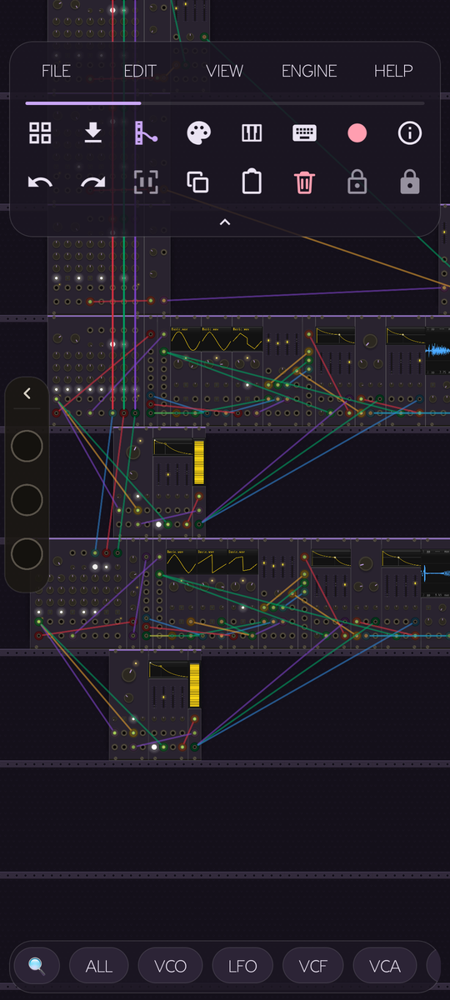
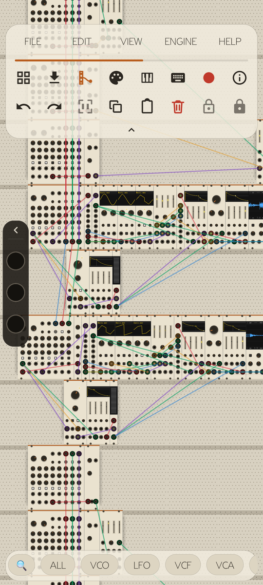
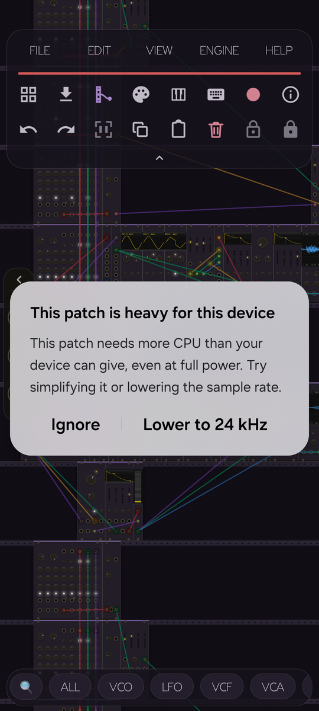
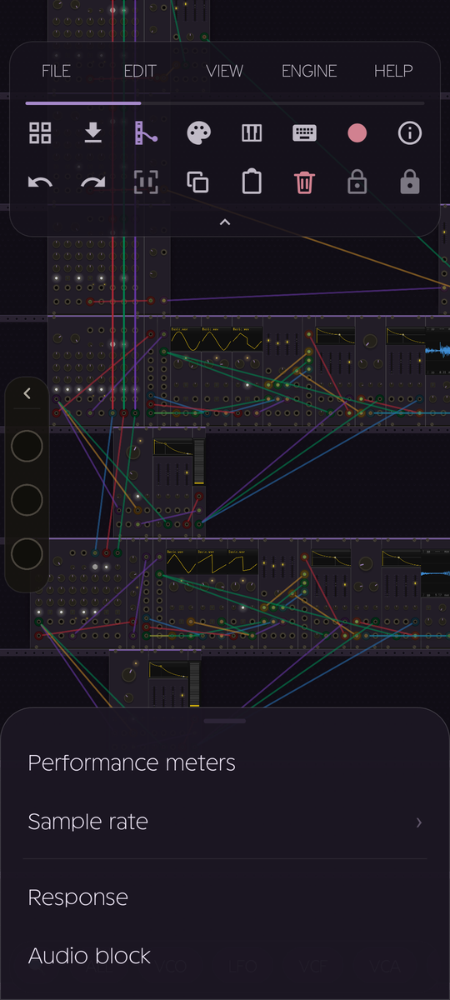
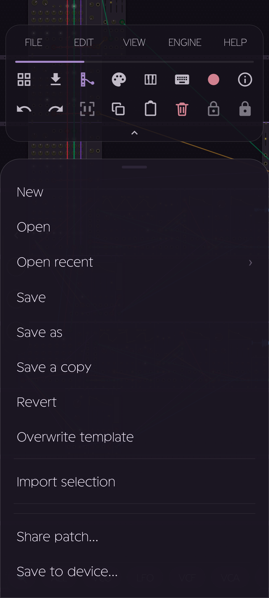

<meta charset="utf-8">
<title>RackDroid 0.1.3: the sound comes first</title>
<meta name="viewport" content="width=device-width, initial-scale=1">
<meta name="description" content="RackDroid 0.1.3: the engine chooses how many cores to use, independent parts of a patch run in parallel, oscillators as on desktop, a light theme and mouse support.">
<style>
  @font-face {
    font-family: "Geomini";
    src: url("assets/fonts/Geomini.ttf") format("truetype");
    font-weight: 400 700;
    font-display: swap;
  }

  :root {
    color-scheme: dark;
    --bg: #120f0b;
    --bg-1: #17130d;
    --panel: #201b14;
    --panel-2: #251f17;
    --rail: #2c2519;
    --border: rgba(255,255,255,0.08);
    --border-strong: rgba(255,255,255,0.17);
    --text: #ede6d8;
    --text-dim: #a29a8b;
    --text-faint: #6f695d;
    --amber: #f9b130;
    --amber-soft: #ffda9f;
    --amber-glow: rgba(249,177,48,0.35);
    --red: #d45b52;
    --teal: #4fb8a6;
    --violet: #9b7fd4;
    --blue: #5b9bd5;
    --radius-panel: 18px;
    --wrap: 1080px;
  }

  * { box-sizing: border-box; }
  html { scroll-behavior: smooth; }
  html, body {
    margin: 0; padding: 0;
    background: var(--bg);
    color: var(--text);
  }
  body {
    font-family: -apple-system, BlinkMacSystemFont, "Segoe UI", Roboto, Helvetica, Arial, sans-serif;
    font-size: 16px;
    line-height: 1.6;
    overflow-x: hidden;
    background-image:
      radial-gradient(ellipse 900px 500px at 15% -5%, rgba(249,177,48,0.10), transparent 60%),
      radial-gradient(ellipse 700px 500px at 100% 10%, rgba(91,155,213,0.06), transparent 60%);
  }
  ::selection { background: var(--amber); color: #17140f; }

  @media (prefers-reduced-motion: reduce) {
    * { animation-duration: 0.001ms !important; animation-iteration-count: 1 !important; transition-duration: 0.001ms !important; }
  }

  .wrap { max-width: var(--wrap); margin: 0 auto; padding: 0 28px; }

  a { color: var(--amber-soft); }

  /* ---------- nav ---------- */
  .nav {
    position: sticky; top: 0; z-index: 40;
    background: rgba(18,15,11,0.72);
    backdrop-filter: blur(14px);
    -webkit-backdrop-filter: blur(14px);
    border-bottom: 1px solid var(--border);
  }
  .nav .wrap { display: flex; align-items: center; justify-content: space-between; height: 64px; }
  .nav-brand { display: flex; align-items: center; gap: 10px; font-family: "Geomini", sans-serif; font-size: 20px; letter-spacing: 0.02em; }
  .nav-brand .dot { width: 9px; height: 9px; border-radius: 50%; background: var(--amber); box-shadow: 0 0 10px var(--amber-glow); }
  .nav-right { display: flex; align-items: center; gap: 16px; }
  .nav-lang {
    font-family: ui-monospace, "SF Mono", Menlo, monospace;
    font-size: 13px; color: var(--text-dim); text-decoration: none;
    border: 1px solid var(--border-strong); border-radius: 999px; padding: 8px 14px;
    transition: color 0.15s ease, border-color 0.15s ease;
  }
  .nav-lang:hover { color: var(--amber-soft); border-color: var(--amber-soft); }
  .nav-link {
    font-family: ui-monospace, "SF Mono", Menlo, monospace;
    font-size: 13px; color: var(--text-dim); text-decoration: none;
    transition: color 0.15s ease;
  }
  .nav-link:hover { color: var(--amber-soft); }
  .nav-link.active { color: var(--amber-soft); }
  /* The brand, three links and the download pill stop fitting well before a
     phone width: drop the secondary links first, then the language switch. */
  @media (max-width: 860px) { .nav-link { display: none; } }
  @media (max-width: 560px) { .nav-lang { display: none; } }
  .nav-cta {
    font-family: ui-monospace, "SF Mono", Menlo, monospace;
    font-size: 13px; letter-spacing: 0.03em;
    color: #17140f; background: var(--amber-soft);
    border: none; border-radius: 999px; padding: 9px 18px;
    text-decoration: none; font-weight: 600;
    transition: transform 0.15s ease, box-shadow 0.15s ease;
    display: inline-block;
  }
  .nav-cta:hover { transform: translateY(-1px); box-shadow: 0 6px 18px rgba(249,177,48,0.28); }

  /* ---------- hero ---------- */
  .hero { position: relative; padding: 88px 0 60px; overflow: hidden; }
  #patchCanvas {
    position: absolute; inset: 0;
    width: 100%; height: 100%;
    opacity: 0.9;
    pointer-events: none;
    mask-image: linear-gradient(to bottom, black 55%, transparent 96%);
    -webkit-mask-image: linear-gradient(to bottom, black 55%, transparent 96%);
  }
  .hero .wrap {
    position: relative; z-index: 2;
    display: grid; grid-template-columns: 1.1fr 0.9fr; gap: 40px; align-items: center;
  }
  @media (max-width: 860px) { .hero .wrap { grid-template-columns: 1fr; } }

  .kicker {
    font-family: ui-monospace, "SF Mono", Menlo, monospace;
    font-size: 12.5px; letter-spacing: 0.22em; text-transform: uppercase;
    color: var(--amber-soft); margin: 0 0 18px;
    display: inline-flex; align-items: center; gap: 8px;
  }
  .kicker::before { content: ""; width: 22px; height: 1px; background: var(--amber-soft); display: inline-block; }

  h1.wordmark {
    font-family: "Geomini", sans-serif;
    font-size: clamp(48px, 8vw, 76px);
    line-height: 0.98;
    margin: 0 0 20px;
    text-wrap: balance;
    letter-spacing: -0.01em;
  }
  h1.wordmark .rd { color: var(--amber); }

  .hero-lede {
    font-size: 18px; color: var(--text-dim); max-width: 46ch; margin: 0 0 32px;
  }
  .hero-lede strong { color: var(--text); }

  .hero-ctas { display: flex; gap: 14px; flex-wrap: wrap; margin-bottom: 40px; }
  .btn {
    font-family: ui-monospace, "SF Mono", Menlo, monospace;
    font-size: 14px; letter-spacing: 0.02em;
    border-radius: 12px; padding: 14px 24px;
    text-decoration: none; font-weight: 600;
    display: inline-flex; align-items: center; gap: 10px;
    transition: transform 0.15s ease, box-shadow 0.15s ease, background 0.15s ease;
    border: 1px solid transparent;
  }
  .btn-primary { background: var(--amber); color: #17140f; }
  .btn-primary:hover { transform: translateY(-2px); box-shadow: 0 10px 26px rgba(249,177,48,0.32); }
  .btn-ghost { background: transparent; color: var(--text); border-color: var(--border-strong); }
  .btn-ghost:hover { border-color: var(--amber-soft); color: var(--amber-soft); transform: translateY(-2px); }

  .hero-meta {
    display: flex; gap: 22px; flex-wrap: wrap;
    font-family: ui-monospace, "SF Mono", Menlo, monospace;
    font-size: 12.5px; color: var(--text-faint);
  }
  .hero-meta span b { color: var(--text-dim); }

  .device {
    position: relative;
    border-radius: 34px;
    padding: 12px;
    background: linear-gradient(160deg, #2b2519, #17130d 60%);
    border: 1px solid var(--border-strong);
    box-shadow: 0 30px 60px -20px rgba(0,0,0,0.65), 0 0 0 1px rgba(0,0,0,0.4);
    max-width: 320px;
    margin: 0 auto;
    animation: float 7s ease-in-out infinite;
  }
  @media (prefers-reduced-motion: reduce) { .device { animation: none; } }
  @keyframes float {
    0%, 100% { transform: translateY(0px) rotate(-0.4deg); }
    50% { transform: translateY(-14px) rotate(0.4deg); }
  }
  .device img { width: 100%; display: block; border-radius: 24px; }
  .device::after {
    content: "";
    position: absolute; left: 50%; top: 6px; transform: translateX(-50%);
    width: 46px; height: 5px; border-radius: 3px; background: rgba(0,0,0,0.5);
  }

  /* ---------- rack rail divider ---------- */
  .rail {
    height: 30px;
    background: var(--rail);
    border-top: 1px solid var(--border-strong);
    border-bottom: 1px solid var(--border-strong);
    background-image: radial-gradient(circle, rgba(0,0,0,0.5) 1.4px, transparent 1.6px);
    background-size: 22px 22px;
    background-position: 11px center;
  }

  section { padding: 84px 0; }
  section.tight { padding: 60px 0; }

  .section-head { max-width: 620px; margin: 0 0 46px; }
  .section-head .kicker { margin-bottom: 12px; }
  h2.section-title {
    font-family: "Geomini", sans-serif;
    font-size: clamp(28px, 4vw, 38px);
    margin: 0 0 14px; text-wrap: balance;
  }
  .section-head p { color: var(--text-dim); font-size: 16.5px; margin: 0; max-width: 56ch; }

  /* ---------- reveal ---------- */
  .reveal { opacity: 0; transform: translateY(22px); transition: opacity 0.7s ease, transform 0.7s ease; }
  .reveal.in-view { opacity: 1; transform: translateY(0); }
  .reveal-stagger.in-view > * { animation: none; }

  /* ---------- why grid ---------- */
  .why-grid {
    display: grid; grid-template-columns: repeat(3, 1fr); gap: 18px;
  }
  @media (max-width: 900px) { .why-grid { grid-template-columns: repeat(2, 1fr); } }
  @media (max-width: 620px) { .why-grid { grid-template-columns: 1fr; } }
  .why-card {
    background: var(--panel);
    border: 1px solid var(--border);
    border-radius: var(--radius-panel);
    padding: 26px 24px;
    transition: transform 0.25s ease, border-color 0.25s ease, box-shadow 0.25s ease;
  }
  .why-card:hover {
    transform: translateY(-4px);
    border-color: var(--border-strong);
    box-shadow: 0 16px 34px -18px rgba(0,0,0,0.6);
  }
  .why-icon { width: 38px; height: 38px; margin-bottom: 16px; }
  .why-card h3 { font-size: 16.5px; margin: 0 0 8px; color: var(--text); }
  .why-card p { font-size: 14.5px; color: var(--text-dim); margin: 0; }

  /* ---------- showcase ---------- */
  .showcase-wrap {
    position: relative;
    display: flex; gap: 40px; justify-content: center; align-items: center; flex-wrap: wrap;
    padding: 20px 0 10px;
  }
  .showcase-frame {
    border-radius: 26px; padding: 9px;
    background: linear-gradient(160deg, #2b2519, #17130d 60%);
    border: 1px solid var(--border-strong);
    box-shadow: 0 24px 50px -22px rgba(0,0,0,0.6);
    width: 240px;
    transition: transform 0.3s ease;
  }
  .showcase-frame:hover { transform: translateY(-6px); }
  .showcase-frame img { width: 100%; display: block; border-radius: 18px; }

  /* ---------- feature rack rows ---------- */
  .rack-row {
    background: var(--panel);
    border: 1px solid var(--border);
    border-radius: 14px;
    padding: 20px 20px 18px;
    position: relative;
  }
  .rack-row::before, .rack-row::after {
    content: ""; position: absolute; top: 9px; width: 6px; height: 6px; border-radius: 50%;
    background: #3a3226; box-shadow: inset 0 0 0 1px rgba(0,0,0,0.4);
  }
  .rack-row::before { left: 9px; }
  .rack-row::after { right: 9px; }
  .feature-grid { display: grid; grid-template-columns: repeat(4, 1fr); gap: 14px; }
  @media (max-width: 900px) { .feature-grid { grid-template-columns: repeat(2, 1fr); } }
  @media (max-width: 560px) { .feature-grid { grid-template-columns: 1fr; } }
  .rack-row .f-icon { font-size: 21px; margin-bottom: 10px; display: block; }
  .rack-row h4 {
    font-family: ui-monospace, "SF Mono", Menlo, monospace;
    font-size: 12px; letter-spacing: 0.08em; text-transform: uppercase;
    color: var(--amber-soft); margin: 0 0 8px;
  }
  .rack-row p { font-size: 13.5px; color: var(--text-dim); margin: 0; }

  /* ---------- expand / plugins ---------- */
  .plugin-pills { display: flex; flex-wrap: wrap; gap: 10px; margin: 28px 0 0; }
  .pill {
    font-family: ui-monospace, "SF Mono", Menlo, monospace;
    font-size: 13px; padding: 9px 16px; border-radius: 999px;
    background: var(--panel-2); border: 1px solid var(--border-strong);
    color: var(--text-dim);
    transition: color 0.2s ease, border-color 0.2s ease;
  }
  .pill:hover { color: var(--amber-soft); border-color: var(--amber-soft); }

  /* ---------- cta ---------- */
  .cta-panel {
    background: radial-gradient(ellipse 700px 300px at 30% 0%, rgba(249,177,48,0.14), transparent 70%), var(--panel);
    border: 1px solid var(--border-strong);
    border-radius: 26px;
    padding: 56px 48px;
    text-align: center;
  }
  @media (max-width: 620px) { .cta-panel { padding: 40px 24px; } }
  .cta-panel h2 { font-family: "Geomini", sans-serif; font-size: clamp(26px, 4vw, 36px); margin: 0 0 14px; }
  .cta-panel p { color: var(--text-dim); max-width: 50ch; margin: 0 auto 30px; }
  .req-line {
    margin-top: 26px; font-family: ui-monospace, "SF Mono", Menlo, monospace;
    font-size: 12.5px; color: var(--text-faint);
  }

  /* ---------- footer ---------- */
  footer { padding: 40px 0 60px; border-top: 1px solid var(--border); }
  footer .wrap { display: flex; flex-direction: column; gap: 14px; }
  .foot-links { display: flex; gap: 18px; flex-wrap: wrap; font-size: 13px; }
  .foot-fine { font-size: 12px; color: var(--text-faint); line-height: 1.7; max-width: 70ch; }

  .scope {
    width: 100%; height: 46px; display: block; margin: 0 0 6px;
    opacity: 0.55;
  }

  /* Floating news badge: what is coming next, visible without scrolling. */
  #update {
    position: fixed;
    top: 25%;
    left: 10px;
    padding: 5px;
    background-color: var(--amber);
    z-index: 100;
    border-radius: 5px;
  }
  #update h1,
  #update h2 {
    color: #17140f;
    margin: 0;
    font-size: 12px;
    text-align: left;
    padding-left: 5px;
  }
  #update h2 { font-size: 10px; width: 90px; }
  #update h1 { text-decoration: #17140f underline; }
  #update span {
    margin: 5px 0 3px;
    padding: 7px;
    color: #17140f;
    display: block;
    width: 90px;
    line-height: 1;
    font-size: 12px;
    border: solid 1px #17140f;
    border-radius: 5px;
  }
  #update a { color: #17140f; }
  #update video { display: block; border-radius: 4px; }
  /* Il badge News è fissato sullo schermo: su un telefono, a un quarto
     dell'altezza, finisce esattamente sopra il titolo. Sotto i 760px scende
     nell'angolo in basso a sinistra, dove non copre niente da leggere. */
  @media (max-width: 760px) {
    /* In flusso, in cima all'eroe: fissato copriva prima il titolo e poi,
       spostato in basso, il pulsante secondario. Qui scorre via con la
       pagina e non si sovrappone mai a niente. */
    #update {
      /* In flusso ma sopra il video/le linee dell'eroe, che sono assoluti:
         senza z-index il badge finisce sotto e sparisce. */
      position: relative;
      z-index: 3;
      display: flex;
      align-items: center;
      gap: 8px;
      width: fit-content;
      margin: 12px 0 0 16px;
      padding: 5px 8px;
    }
    #update h1 { font-size: 11px; padding-left: 0; }
    #update span { width: auto; margin: 0; padding: 5px 8px; font-size: 11px; }
  }
</style>

<style>
  .ann { padding: 74px 0 20px; }
  .ann .wrap { max-width: 1040px; }
  .ann-head { text-align: center; max-width: 720px; margin: 0 auto; }
  .ann h1 {
    font-family: "Geomini", sans-serif;
    font-size: clamp(32px, 6.4vw, 58px);
    line-height: 1.04; margin: 12px 0 18px; letter-spacing: -0.01em;
    text-wrap: balance;
  }
  .ann h1 .rd { color: var(--amber); }
  .ann-lede { font-size: clamp(16px, 2.1vw, 19px); color: var(--text-dim); line-height: 1.7; margin: 0 auto; }
  .stamp {
    display: inline-block; padding: 7px 14px;
    border: 1px solid var(--amber); border-radius: 999px;
    font-family: ui-monospace, "SF Mono", Menlo, monospace;
    font-size: 12.5px; letter-spacing: 0.1em; color: var(--amber);
  }
  .count { display: flex; gap: 12px; justify-content: center; margin: 32px 0 4px; flex-wrap: wrap; }
  .count div {
    min-width: 84px; padding: 12px 10px;
    border: 1px solid var(--border-strong); border-radius: 14px;
    background: rgba(255,255,255,0.02);
  }
  .count b { display: block; font-family: "Geomini", sans-serif; font-size: 28px; color: var(--amber-soft); }
  .count span { font-size: 10.5px; letter-spacing: 0.11em; color: var(--text-faint); text-transform: uppercase; }

  /* The clip: a real screen recording, so it gets room to be seen. */
  .clip { max-width: 760px; margin: 44px auto 0; }
  .clip video {
    width: 100%; display: block; border-radius: 18px;
    border: 1px solid var(--border-strong);
    box-shadow: 0 26px 50px -22px rgba(0,0,0,0.8);
  }
  .clip .cap { text-align: center; font-size: 13.5px; color: var(--text-faint); margin-top: 12px; }

  .ann-ctas { display: flex; gap: 12px; justify-content: center; flex-wrap: wrap; margin: 26px 0 10px; }

  /* ---------- scroll-driven feature tour ---------- */
  .scrolly { position: relative; margin: 40px 0 10px; }
  .scrolly-grid { display: grid; grid-template-columns: 1fr 380px; gap: 60px; align-items: start; }
  .steps { display: flex; flex-direction: column; }
  .step { min-height: 78vh; display: flex; flex-direction: column; justify-content: center; }
  .step h2 {
    font-family: "Geomini", sans-serif; font-size: clamp(24px, 3.4vw, 34px);
    margin: 0 0 14px; line-height: 1.15; text-wrap: balance;
  }
  .step p { color: var(--text-dim); font-size: 16.5px; line-height: 1.75; margin: 0 0 12px; max-width: 50ch; }
  .step .kicker { margin-bottom: 10px; }
  .step { opacity: 0.34; transition: opacity 0.45s ease; }
  .step.on { opacity: 1; }

  .stage { position: sticky; top: 0; height: 100vh; display: flex; align-items: center; justify-content: center; }
  .phone {
    position: relative; width: 300px; aspect-ratio: 1080 / 2400;
    border-radius: 30px; overflow: hidden;
    border: 1px solid var(--border-strong);
    box-shadow: 0 34px 70px -26px rgba(0,0,0,0.85);
    background: #17130d;
  }
  .phone img {
    position: absolute; inset: 0; width: 100%; height: 100%;
    object-fit: cover; opacity: 0; transition: opacity 0.5s ease;
  }
  .phone img.on { opacity: 1; }

  /* The ring that points at whatever the current step is talking about. */
  .hl {
    position: absolute; border: 2px solid var(--amber); border-radius: 12px;
    box-shadow: 0 0 0 3px rgba(249,177,48,0.18), 0 0 22px rgba(249,177,48,0.5);
    opacity: 0; pointer-events: none;
    transition: opacity 0.4s ease, left 0.55s cubic-bezier(0.4,0,0.2,1),
                top 0.55s cubic-bezier(0.4,0,0.2,1),
                width 0.55s cubic-bezier(0.4,0,0.2,1),
                height 0.55s cubic-bezier(0.4,0,0.2,1);
  }
  .hl.on { opacity: 1; animation: hlpulse 2.1s ease-in-out infinite; }
  @keyframes hlpulse {
    0%, 100% { box-shadow: 0 0 0 3px rgba(249,177,48,0.18), 0 0 22px rgba(249,177,48,0.45); }
    50%      { box-shadow: 0 0 0 5px rgba(249,177,48,0.10), 0 0 30px rgba(249,177,48,0.75); }
  }

  /* Stacked on a phone: the screen rides along at the top, the text scrolls under. */
  @media (max-width: 900px) {
    .scrolly-grid { grid-template-columns: 1fr; gap: 0; }
    .stage { order: -1; height: auto; padding: 14px 0 22px; top: 0;
             background: linear-gradient(to bottom, var(--bg) 78%, transparent); z-index: 5; }
    .phone { width: 210px; }
    .step { min-height: 62vh; }
  }
  @media (prefers-reduced-motion: reduce) {
    .phone img, .hl { transition: none; }
    .hl.on { animation: none; }
    .step { opacity: 1; }
  }

  .changes-grid { display: grid; grid-template-columns: 1fr 1fr; gap: 20px; }
  @media (max-width: 800px) { .changes-grid { grid-template-columns: 1fr; } }
  .changes-list { margin: 10px 0 0; padding-left: 20px; color: var(--text-dim); font-size: 15.5px; line-height: 1.6; }
  .changes-list li { margin: 0 0 9px; }
  .changes-list li::marker { color: var(--amber); }
</style>

<nav class="nav">
  <div class="wrap">
    <div class="nav-brand"><span class="dot"></span>RackDroid</div>
    <div class="nav-right">
      <a class="nav-link" href="index.html">Home</a>
      <a class="nav-link active" href="update.html">News</a>
      <a class="nav-lang" href="update.it.html">IT</a>
      <a class="nav-cta" href="https://github.com/nowheel/RackDroid/releases/download/v0.1.3/rackdroid-0.1.3-sideload-arm64-v8a.apk" target="_blank" rel="noopener">Download APK</a>
    </div>
  </div>
</nav>
<section class="ann">
  <div class="wrap">
    <div class="ann-head">
      <span class="stamp">OUT NOW · 10 OCTOBER 2026</span>
      <h1>The sound<br>comes first<span class="rd">.</span></h1>
      <p class="ann-lede">
        Two months of work on one thing: making patches play clean, on phones that have little in common. Plus a few comforts that were missing.
      </p>
      <div class="ann-ctas">
        <a class="btn btn-primary" href="https://github.com/nowheel/RackDroid/releases/download/v0.1.3/rackdroid-0.1.3-sideload-arm64-v8a.apk" target="_blank" rel="noopener">↓ Download 0.1.3</a>
        <a class="btn btn-ghost" href="rackdroid-manuale.html">Read the manual</a>
      </div>
    </div>
    <div class="clip" style="max-width:560px">
      <div style="display:flex;gap:18px;justify-content:center">
        
        
      </div>
      <p class="cap">The Violet theme, and the new Cream theme.</p>
    </div>
  </div>
</section>
<section class="scrolly">
  <div class="wrap scrolly-grid">
    <div class="steps">
      <div class="step" data-shot="rack" data-hl="5,9.2,90,2.4">
      <p class="kicker">Audio</p>
      <h2>The engine tunes itself</h2>
      <p>Open a patch and RackDroid chooses how many cores to use, for that phone and that patch. Then it remembers: next time it starts at once.</p>
      <p>The Threads menu is gone, because there is nothing left to set by hand. The thin bar under the menus shows how hard the engine is working.</p>
    </div><div class="step" data-shot="rack">
      <p class="kicker">In parallel</p>
      <h2>More instruments, more cores</h2>
      <p>Groups of modules with no cable between them (several voices, several instruments in one rack) are each computed on a core of their own.</p>
      <p>A rack made of separate parts holds far more than before. And it sounds exactly as it did: who does the work changes, the result does not.</p>
    </div><div class="step" data-shot="heavy" data-hl="3,39,94,26">
      <p class="kicker">No guessing</p>
      <h2>It tells you when it is too much</h2>
      <p>When a patch asks for more than the phone can give, the app says so and offers to halve the engine's sample rate.</p>
      <p>One tap, and the patch that crackled plays again.</p>
    </div><div class="step" data-shot="engine" data-hl="3,92.3,60,6.2">
      <p class="kicker">Audio block</p>
      <h2>Automatic, or your way</h2>
      <p>The Engine menu lets you choose the audio block size. On Automatic the app looks after it; fix one, and it stays.</p>
    </div><div class="step" data-shot="rack">
      <p class="kicker">Sound</p>
      <h2>The same edges as on desktop</h2>
      <p>Square and saw waves now have the shape they have in VCV Rack on a computer. On a phone they were being computed slightly differently.</p>
      <p>A patch made on the computer opens on the phone, and the other way round, and sounds the same.</p>
    </div><div class="step" data-shot="cream" data-hl="39,11.2,10.5,4.4">
      <p class="kicker">Themes</p>
      <h2>There is light, too</h2>
      <p>Beside the four dark themes comes Cream: off-white panels, a pale rack, dark knobs. Pick it from the palette button.</p>
    </div><div class="step" data-shot="file" data-hl="3,92.3,72,6.2">
      <p class="kicker">File</p>
      <h2>Save where you like</h2>
      <p>File ▸ Save to device opens the system picker: the patch lands in the folder you choose, ready to copy or share.</p>
    </div><div class="step" data-shot="rack">
      <p class="kicker">Mouse</p>
      <h2>A mouse changes everything</h2>
      <p>Right button for the context menu, wheel to scroll, zoom and turn knobs, tooltips on hover. On a tablet or a Chromebook you work as you would at a computer.</p>
    </div>
    </div>
    <div class="stage">
    <div class="phone">
      
      
      
      
      
      <div class="hl"></div>
    </div>
  </div>
  </div>
</section>
<section id="changes" style="padding: 30px 0 10px">
  <div class="wrap">
    <div class="section-head">
      <p class="kicker">In short</p>
      <h2 class="section-title">Everything that changes in 0.1.3</h2>
      <p>What is new and what is fixed, as a list: so you decide whether and when to update.</p>
    </div>
    <div class="changes-grid">
      <div class="why-card">
        <h3>New</h3>
        <ul class="changes-list">
          <li>The engine chooses how many cores to use and remembers it for each patch</li>
          <li>Independent parts of a patch run in parallel, each on a core of its own</li>
          <li>A notice when a patch is too heavy, offering to halve the sample rate</li>
          <li>Engine ▸ Audio block: automatic, or fixed by you</li>
          <li>The engine's load shown on the toolbar</li>
          <li>Square and saw waves with the same edges as VCV Rack on a computer</li>
          <li>A light theme, Cream</li>
          <li>File ▸ Save to device</li>
          <li>Mouse: right button, wheel, tooltips on hover</li>
          <li>Smoother pinch zoom and a faster start</li>
        </ul>
      </div>
      <div class="why-card">
        <h3>Fixes</h3>
        <ul class="changes-list">
          <li>Audio crackling on several phones, even with light patches</li>
          <li>Crackling that went on after unlocking the screen or under the notification shade: it is now over in about a second</li>
          <li>A patch could be lost if the app was closed while starting</li>
          <li>The rack could start scrolling by itself after a drag</li>
          <li>A menu could stay open and look like a frozen app</li>
          <li>Opening a heavy patch could hang the app for over a minute</li>
          <li>Recording started even with no audio output and wrote an empty file</li>
          <li>The language chosen in Help ▸ Language did not apply to the whole app</li>
          <li>A large patch was drawn one panel at a time, now within seconds</li>
          <li>Labels hard to read and misshapen on the light theme</li>
          <li>Several rare crashes</li>
        </ul>
      </div>
    </div>
  </div>
</section>
<section class="ann">
  <div class="wrap ann-head">
    <div class="ann-ctas">
      <a class="btn btn-primary" href="https://github.com/nowheel/RackDroid/releases/download/v0.1.3/rackdroid-0.1.3-sideload-arm64-v8a.apk" target="_blank" rel="noopener">↓ Download 0.1.3</a>
      <a class="btn btn-ghost" href="index.html">Back to the site</a>
    </div>
    <p class="ann-lede" style="font-size:14.5px;margin-top:18px"><a href="update-0.1.2.html" style="color:var(--amber-soft)">The previous update: cable parking and selection</a></p>
  </div>
</section>
<footer>
  <div class="wrap">
    <div class="foot-links">
      <a href="index.html">Home</a>
      <a href="https://github.com/nowheel/RackDroid">Repository</a>
      <a href="privacy.html">Privacy</a>
      <a href="https://vcvrack.com" target="_blank" rel="noopener">VCV Rack</a>
    </div>
    <p class="foot-fine">
      RackDroid is an <strong>unofficial</strong> port of the VCV Rack 2 engine, built from the upstream sources (GPLv3). Not affiliated with or endorsed by VCV.
    </p>
  </div>
</footer>

<script>
  // Ties each block of text to a screen and a highlight box. No library: an
  // IntersectionObserver picks whichever step is crossing the middle of the
  // viewport, and everything else is a class swap.
  (function () {
    var stage = document.querySelector('.phone');
    if (!stage) return;
    var shots = stage.querySelectorAll('img');
    var ring = stage.querySelector('.hl');
    var steps = document.querySelectorAll('.step');
    if (!steps.length) return;

    function show(step) {
      var want = step.getAttribute('data-shot');
      shots.forEach(function (img) {
        img.classList.toggle('on', img.getAttribute('data-shot') === want);
      });
      steps.forEach(function (s) { s.classList.toggle('on', s === step); });

      var box = step.getAttribute('data-hl');
      if (!box) { ring.classList.remove('on'); return; }
      var v = box.split(',');
      if (v.length !== 4) { ring.classList.remove('on'); return; }
      ring.style.left = v[0] + '%';
      ring.style.top = v[1] + '%';
      ring.style.width = v[2] + '%';
      ring.style.height = v[3] + '%';
      ring.classList.add('on');
    }

    var current = null;
    var io = new IntersectionObserver(function (entries) {
      entries.forEach(function (e) {
        if (e.isIntersecting && e.target !== current) {
          current = e.target;
          show(e.target);
        }
      });
    }, { rootMargin: '-45% 0px -45% 0px', threshold: 0 });

    steps.forEach(function (s) { io.observe(s); });
    show(steps[0]);
  })();
</script>

